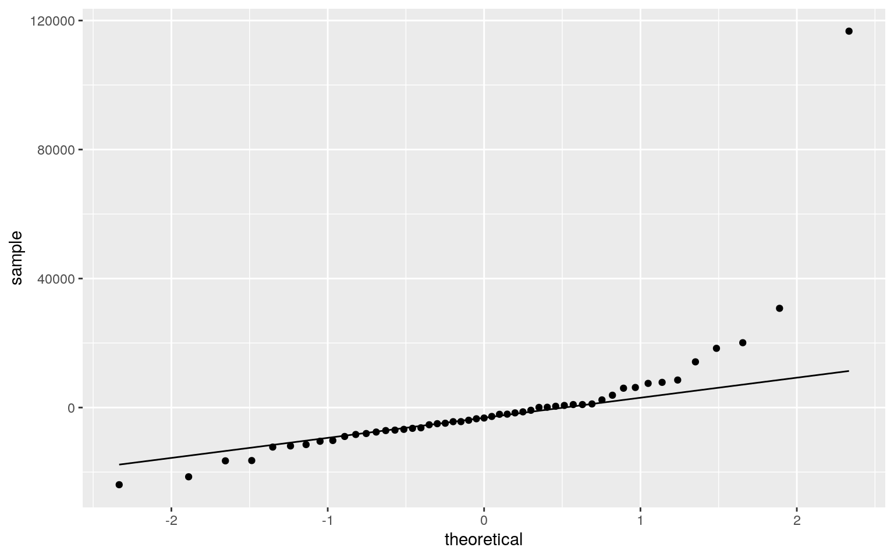

library(sandwich)
library(lmtest)
library(plotROC)
library(pROC)
library(glmnet)
library(dplyr)
election<-read.csv("election_turnout.csv")
glimpse(election)## Rows: 51
## Columns: 11
## $ X <int> 1, 2, 3, 4, 5, 6, 7, 8, 9, 10, 11, 12, 13, 14,
15, 16, 17, 18, 19, 20, 21, 22, …
## $ year <int> 2016, 2016, 2016, 2016, 2016, 2016, 2016,
2016, 2016, 2016, 2016, 2016, 2016, 2…
## $ state <fct> Alabama, Alaska, Arizona, Arkansas,
California, Colorado, Connecticut, Delaware…
## $ region <fct> South, West, West, South, West, West,
Northeast, South, South, South, South, We…
## $ division <fct> East South Central, Pacific, Mountain,
West South Central, Pacific, Mountain, N…
## $ turnoutho <dbl> 59.0, 61.3, 55.0, 52.8, 56.7, 70.1,
65.2, 64.4, 60.9, 64.6, 59.2, 42.2, 59.1, 6…
## $ perhsed <dbl> 84.3, 92.1, 86.0, 84.8, 81.8, 90.7,
89.9, 88.4, 89.3, 86.9, 85.4, 91.0, 89.5, 8…
## $ percoled <dbl> 23.5, 28.0, 27.5, 21.1, 31.4, 38.1,
37.6, 30.0, 54.6, 27.3, 28.8, 30.8, 25.9, 3…
## $ gdppercap <int> 42663, 81801, 43269, 41129, 61924,
58009, 72331, 69930, 181185, 42595, 48574, 5…
## $ ss <int> 0, 0, 0, 0, 0, 1, 0, 0, 0, 1, 0, 0, 0, 0, 0,
1, 0, 0, 0, 0, 0, 0, 1, 1, 0, 0, 0…
## $ trumpw <int> 1, 1, 1, 1, 0, 0, 0, 0, 0, 1, 1, 0, 1, 0,
1, 1, 1, 1, 1, 0, 0, 0, 1, 0, 1, 1, 1…elec<-election %>% select(region,division,turnoutho,gdppercap,trumpw)
elec2<-elec %>% mutate(Won_By=recode(trumpw,'0'='Clinton','1'='Trump'))
gdp_c<-elec$gdppercap-mean(elec$gdppercap)
glimpse(elec)## Rows: 51
## Columns: 5
## $ region <fct> South, West, West, South, West, West,
Northeast, South, South, South, South, We…
## $ division <fct> East South Central, Pacific, Mountain,
West South Central, Pacific, Mountain, N…
## $ turnoutho <dbl> 59.0, 61.3, 55.0, 52.8, 56.7, 70.1,
65.2, 64.4, 60.9, 64.6, 59.2, 42.2, 59.1, 6…
## $ gdppercap <int> 42663, 81801, 43269, 41129, 61924,
58009, 72331, 69930, 181185, 42595, 48574, 5…
## $ trumpw <int> 1, 1, 1, 1, 0, 0, 0, 0, 0, 1, 1, 0, 1, 0,
1, 1, 1, 1, 1, 0, 0, 0, 1, 0, 1, 1, 1…class_diag<-function(probs,truth){
tab<-table(factor(probs>.5,levels=c("FALSE","TRUE")),truth)
acc=sum(diag(tab))/sum(tab)
sens=tab[2,2]/colSums(tab)[2]
spec=tab[1,1]/colSums(tab)[1]
ppv=tab[2,2]/rowSums(tab)[2]
if(is.numeric(truth)==FALSE & is.logical(truth)==FALSE) truth<-as.numeric(truth)-1
#CALCULATE EXACT AUC
ord<-order(probs, decreasing=TRUE)
probs <- probs[ord]; truth <- truth[ord]
TPR=cumsum(truth)/max(1,sum(truth))
FPR=cumsum(!truth)/max(1,sum(!truth))
dup<-c(probs[-1]>=probs[-length(probs)], FALSE)
TPR<-c(0,TPR[!dup],1); FPR<-c(0,FPR[!dup],1)
n <- length(TPR)
auc<- sum( ((TPR[-1]+TPR[-n])/2) * (FPR[-1]-FPR[-n]) )
data.frame(acc,sens,spec,ppv,auc)
}#Introduction For this project, I will be analyzing data taken from the 2016 election. This dataset had 51 observations, all states and DC, and 11 variables. I formed a separate dataset containing the variables: region, division, turnout rate, gdp per capita, and whether Trump won that state. I omitted the state identifier because that variable would interfere with later tests assessing predictor variables. I also omitted other variables that weren’t of interest or were redundant. This project will evaluate the variables and their interactions through several statistical tests. #Manova
man1 <- manova(cbind(turnoutho, gdppercap)~division, data=elec)
summary(man1)## Df Pillai approx F num Df den Df Pr(>F)
## division 8 0.41563 1.3773 16 84 0.1732
## Residuals 42summary.aov(man1)## Response turnoutho :
## Df Sum Sq Mean Sq F value Pr(>F)
## division 8 566.21 70.776 2.2782 0.04005 *
## Residuals 42 1304.80 31.067
## ---
## Signif. codes: 0 '***' 0.001 '**' 0.01 '*' 0.05 '.' 0.1
' ' 1
##
## Response gdppercap :
## Df Sum Sq Mean Sq F value Pr(>F)
## division 8 2.6617e+09 332717365 0.7457 0.6512
## Residuals 42 1.8740e+10 446202237elec %>% group_by(trumpw) %>% summarize(mean(turnoutho),mean(gdppercap))## # A tibble: 2 x 3
## trumpw `mean(turnoutho)` `mean(gdppercap)`
## <int> <dbl> <dbl>
## 1 0 63.1 64143.
## 2 1 59.3 49935.pairwise.t.test(elec$turnoutho,elec$division,p.adj="none")->output
output##
## Pairwise comparisons using t tests with pooled SD
##
## data: elec$turnoutho and elec$division
##
## East North Central East South Central Middle Atlantic
Mountain New England
## East South Central 0.0707 - - - -
## Middle Atlantic 0.7035 0.2137 - - -
## Mountain 0.2449 0.3557 0.5652 - -
## New England 0.3626 0.0079 0.2430 0.0279 -
## Pacific 0.1824 0.5674 0.4334 0.7468 0.0243
## South Atlantic 0.6159 0.1168 0.9976 0.4262 0.1188
## West North Central 0.8934 0.0408 0.6058 0.1540 0.3947
## West South Central 0.0225 0.6278 0.0937 0.1416 0.0018
## Pacific South Atlantic West North Central
## East South Central - - -
## Middle Atlantic - - -
## Mountain - - -
## New England - - -
## Pacific - - -
## South Atlantic 0.3079 - -
## West North Central 0.1172 0.4780 -
## West South Central 0.2814 0.0352 0.0110
##
## P value adjustment method: noneoutput$p.value*31## East North Central East South Central Middle Atlantic
Mountain New England
## East South Central 2.1903452 NA NA NA NA
## Middle Atlantic 21.8075719 6.6244203 NA NA NA
## Mountain 7.5914524 11.0269463 17.521436 NA NA
## New England 11.2400330 0.2440021 7.534433 0.8662397 NA
## Pacific 5.6529736 17.5908848 13.433961 23.1520592
0.75319319
## South Atlantic 19.0943541 3.6199919 30.926478 13.2110248
3.68283516
## West North Central 27.6953854 1.2636230 18.779883
4.7750432 12.23561650
## West South Central 0.6967767 19.4614518 2.906248
4.3911135 0.05693943
## Pacific South Atlantic West North Central
## East South Central NA NA NA
## Middle Atlantic NA NA NA
## Mountain NA NA NA
## New England NA NA NA
## Pacific NA NA NA
## South Atlantic 9.544938 NA NA
## West North Central 3.633833 14.816991 NA
## West South Central 8.723484 1.091718 0.33971941-.95^31## [1] 0.7960932.05/31## [1] 0.001612903I ran a MANOVA test to determine the effect of the division on election turnout and state gdp. The initial MANOVA showed no significant interaction with the varaibles. However, after I ran the univariate ANOVAs, there was a significant interaction between divisions and turnout rate in the elections. To explore this, I ran a post hoc t test on the divisions and adjusted for error. The tests showed no significance among divisions, but the New England and West South Central divisions were the closest to showing a significant effect. I performed a total of 31 tests, so there is a 79.6% chance that there is at least one type 1 error. The bonferroni correction is .0016. These tests likely failed to show significance because the divisions and states within them are likely large enough to mask outliers. Because this data is from only from one year, this dataset likely fails most assumptions. There also doesn’t appear to be any clear linear relationships among the dependent variables.
#Randomization
elec %>% group_by(trumpw) %>% summarize(mean(turnoutho),mean(gdppercap))## # A tibble: 2 x 3
## trumpw `mean(turnoutho)` `mean(gdppercap)`
## <int> <dbl> <dbl>
## 1 0 63.1 64143.
## 2 1 59.3 49935.clintgdps<-c(61924,58009,72331,69930,181185,55598,59472,41477,60097,69705,60256,48639,53834,64070,41551,72965,56009,53321,47520,56891,62213)
trumpgdps<-c(42663,81801,43269,41129,42595,48574,39398,49328,52807,50218,41586,54159,46585,35717,47209,44308,59175,50159,70926,51052,46298,52925,40212,51902,46531,59994,48965,38567,51456,68536)
gdps<-data.frame(candidate=c(rep("Clinton",21),rep("Trump",30)),gdp=c(clintgdps,trumpgdps))
glimpse(gdps)## Rows: 51
## Columns: 2
## $ candidate <fct> Clinton, Clinton, Clinton, Clinton,
Clinton, Clinton, Clinton, Clinton, Clinton…
## $ gdp <dbl> 61924, 58009, 72331, 69930, 181185, 55598,
59472, 41477, 60097, 69705, 60256, 4…gdps %>% ggplot(aes(gdp,fill=candidate))+geom_histogram(bins=10)+facet_wrap(~candidate,ncol = 2)+theme(legend.position="none")+scale_color_manual(breaks = c("Trump", "Clinton"),values=c("red", "blue"))gdps %>% group_by(candidate) %>% summarize(means=mean(gdp)) %>% summarize(mean_diff=diff(means)) #clinton higher mean## # A tibble: 1 x 1
## mean_diff
## <dbl>
## 1 -14208.permR<-data.frame(candidate=gdps$candidate,gdp=sample(gdps$gdp))
permR %>% group_by(candidate) %>% summarize(means=mean(gdp)) %>% summarize(mean_diff=diff(means))## # A tibble: 1 x 1
## mean_diff
## <dbl>
## 1 6722.dist_perm<-vector()
for (i in 1:5000) {
new<-data.frame(gdp=sample(gdps$gdp),candidate=gdps$candidate)
dist_perm[i]<-mean(new[new$candidate=="Clinton",]$gdp)-mean(new[new$candidate=="Trump",]$gdp)}
{hist(dist_perm,main="",ylab=""); abline(v = -14207.91,col="red")}mean(dist_perm>14207.91)## [1] 0.001mean(-14207.91>dist_perm)## [1] 2e-04t.test(data=elec2,gdp_c~Won_By,var.eq=T)##
## Two Sample t-test
##
## data: gdp_c by Won_By
## t = 2.542, df = 49, p-value = 0.01423
## alternative hypothesis: true difference in means is not
equal to 0
## 95 percent confidence interval:
## 2976.076 25439.752
## sample estimates:
## mean in group Clinton mean in group Trump
## 8357.597 -5850.318I performed a randomization test on the GDPs of the states to explore the differences between candidates. The null hypothesis was that average GDPs were the same for both Trump and Clinton states and the alternative hypothesis was that the average GDPs were different for Trump and Clinton sates. I calculated the mean difference to be 14207.91 with Clinton states having the higher GDP. I then randomized the data and created a histogram to visualize the distribution. I added a red line at the observed difference and as you can see it is at the far extreme of the histogram. There were no randomized differences that extreme, so we can reject the null that the average GDPs were the same for both Trump and Clinton states. There is a difference between the average GDPs of Trump and Clinton states and a t-test confirms this with a p value of 0.014.
#Linear Regression
elec$gdp_c<-elec$gdppercap-mean(elec$gdppercap)
elec$turnout_c<-elec$turnoutho-mean(elec$turnoutho)
elec2<-elec %>% mutate(Won_By=recode(trumpw,'0'='Clinton','1'='Trump'))
linfit<-lm(gdp_c~turnout_c*Won_By,data = elec2)
summary(linfit)##
## Call:
## lm(formula = gdp_c ~ turnout_c * Won_By, data = elec2)
##
## Residuals:
## Min 1Q Median 3Q Max
## -23923 -7366 -3244 1023 116694
##
## Coefficients:
## Estimate Std. Error t value Pr(>|t|)
## (Intercept) 8718.5 4574.6 1.906 0.0628 .
## turnout_c -161.1 631.0 -0.255 0.7996
## Won_ByTrump -13725.6 5965.4 -2.301 0.0259 *
## turnout_c:Won_ByTrump 698.8 985.5 0.709 0.4818
## ---
## Signif. codes: 0 '***' 0.001 '**' 0.01 '*' 0.05 '.' 0.1
' ' 1
##
## Residual standard error: 19940 on 47 degrees of freedom
## Multiple R-squared: 0.1271, Adjusted R-squared: 0.07137
## F-statistic: 2.281 on 3 and 47 DF, p-value: 0.09145t.test(data=elec2,gdp_c~Won_By,var.eq=T)##
## Two Sample t-test
##
## data: gdp_c by Won_By
## t = 2.542, df = 49, p-value = 0.01423
## alternative hypothesis: true difference in means is not
equal to 0
## 95 percent confidence interval:
## 2976.076 25439.752
## sample estimates:
## mean in group Clinton mean in group Trump
## 8357.597 -5850.318ggplot(elec2,aes(gdp_c,turnout_c,group=Won_By))+
geom_point(aes(color=Won_By),alpha=.5)+
geom_smooth(method ="lm",fullrange=T,aes(color=Won_By))+theme(legend.position ="top")+
scale_color_manual(breaks = c("Trump", "Clinton"),values=c("red", "blue"))(sum((elec$gdp_c-mean(elec$gdp_c))^2)-sum(linfit$residuals^2))/sum((elec$gdp_c-mean(elec$gdp_c))^2)## [1] 0.1270915For the linear regression, i explored the interaction between turnout rate and who won the state on the states GDP. The coefficients show an intercept of 8718.5, a decrease of 161.1 for an increase of turnout rate, a decrease of 13,725.6 if won by Trump, and the slope for turnout on gdp is 698.8 higher for Trump states. Only the coefficient for the Won_By predictor was significant in predicting GDP. I plotted the model and as you can see there is not much separation between the candidates. This model also only explains 12.7% of the variation.
resids<-linfit$residuals
fitvals<-linfit$fitted.values
ggplot()+geom_point(aes(fitvals,resids))+geom_hline(yintercept=0, color='red') ggplot()+geom_histogram(aes(resids), bins=25)ggplot()+geom_qq(aes(sample=resids))+geom_qq_line(aes(sample=resids)) I plotted the data to test for homoskedasticity, normality, and linearity. In the first plot it appears that the data is fairly linear and exhibits homoskedasticity. In the second plot, it appears that the plot is mostly normal with a couple outliers. In the third plot, most of the points fall along the line so the data is mostly linear. Points do stray at the extremes.
linfit2<-lm(gdp_c~turnout_c*Won_By,data = elec2)
bptest(linfit2) #fail to reject null##
## studentized Breusch-Pagan test
##
## data: linfit2
## BP = 1.8902, df = 3, p-value = 0.5955summary(linfit2)$coef[,1:2]## Estimate Std. Error
## (Intercept) 8718.5082 4574.5928
## turnout_c -161.0971 631.0360
## Won_ByTrump -13725.6434 5965.4069
## turnout_c:Won_ByTrump 698.7603 985.5363coeftest(linfit2, vcov = vcovHC(linfit2))[,1:2]## Estimate Std. Error
## (Intercept) 8718.5082 7318.5708
## turnout_c -161.0971 643.4842
## Won_ByTrump -13725.6434 7569.0851
## turnout_c:Won_ByTrump 698.7603 704.3033The results of the bp test show a p-value of 0.596, so we fail to reject the null and conclude that the data is homoskedastic. After the robust standard error was performed, the standard error for the intercept, turnout, and Won_By all increased while the standard error for the turnout:won_by interaction decreased. #Bootstrapping
set.seed(1234)
lm(gdp_c~turnout_c*Won_By,data = elec2) %>% summary##
## Call:
## lm(formula = gdp_c ~ turnout_c * Won_By, data = elec2)
##
## Residuals:
## Min 1Q Median 3Q Max
## -23923 -7366 -3244 1023 116694
##
## Coefficients:
## Estimate Std. Error t value Pr(>|t|)
## (Intercept) 8718.5 4574.6 1.906 0.0628 .
## turnout_c -161.1 631.0 -0.255 0.7996
## Won_ByTrump -13725.6 5965.4 -2.301 0.0259 *
## turnout_c:Won_ByTrump 698.8 985.5 0.709 0.4818
## ---
## Signif. codes: 0 '***' 0.001 '**' 0.01 '*' 0.05 '.' 0.1
' ' 1
##
## Residual standard error: 19940 on 47 degrees of freedom
## Multiple R-squared: 0.1271, Adjusted R-squared: 0.07137
## F-statistic: 2.281 on 3 and 47 DF, p-value: 0.09145samp_dist<-replicate(5000,{
boot_dat<-sample_frac(elec2,replace = T)
bootfit<-lm(gdp_c~turnout_c*Won_By,data = boot_dat)
coef(bootfit)
})
samp_dist %>% t %>% as.data.frame %>% summarise_all(sd)## (Intercept) turnout_c Won_ByTrump turnout_c:Won_ByTrump
## 1 8074.509 849.087 8284.752 892.9009The bootstrapped SEs are: 8212.1 for the intercept, 860.8 for the turnout, 8401.6 for trump states, and 911.1 for the interaction. These errors are all a bit higher than the robust SEs. The interaction is still slightly lower than the first SE. Because these standard errors are greater, these tests support the conclusion to fail to reject the null. The original SEs were 4574.6 for the intercept, 631.0 for the turnout, 5965.4 for the trump states, and 985.5 for the interaction.
#logistic regression
logfit<-glm(trumpw~gdppercap+turnoutho,data=elec,family="binomial")
coeftest(logfit)##
## z test of coefficients:
##
## Estimate Std. Error z value Pr(>|z|)
## (Intercept) 1.0059e+01 3.8216e+00 2.6322 0.008482 **
## gdppercap -7.5566e-05 3.4252e-05 -2.2062 0.027370 *
## turnoutho -9.0880e-02 5.8498e-02 -1.5536 0.120289
## ---
## Signif. codes: 0 '***' 0.001 '**' 0.01 '*' 0.05 '.' 0.1
' ' 1exp(coeftest(logfit))##
## z test of coefficients:
##
## Estimate Std. Error z value Pr(>|z|)
## (Intercept) 2.3374e+04 4.5677e+01 13.9049 1.009
## gdppercap 9.9992e-01 1.0000e+00 0.1101 1.028
## turnoutho 9.1313e-01 1.0602e+00 0.2115 1.128prob<-predict(logfit,type = "response")
table(predict=as.numeric(prob>.5),truth=elec$trumpw)%>%addmargins## truth
## predict 0 1 Sum
## 0 14 6 20
## 1 7 24 31
## Sum 21 30 51(14+24)/51 #Accuracy## [1] 0.745098(24/30) #Sensitivity## [1] 0.8(14/21) #Specificity## [1] 0.6666667class_diag(prob,elec$trumpw)## acc sens spec ppv auc
## 1 0.745098 0.8 0.6666667 0.7741935 0.7761905elec$logit<-predict(logfit,type="link")
ggplot(elec,aes(logit, fill=as.factor(trumpw)))+geom_density(alpha=.3)+
theme(legend.position=c(.63,.85))+geom_vline(xintercept=0)+xlab("predictor (logit)")ROCplot<-ggplot(elec)+geom_roc(aes(d=trumpw,m=prob), n.cuts=0)
ROCplotcalc_auc(ROCplot)## PANEL group AUC
## 1 1 -1 0.7761905The coefficient estimates for my logistical regression are: 1.0059e+01 for the intercept, -7.5566e-05 for the GDP, and -9.0880e-02 for the turnout. Only the intercept and GDP were found to be significant. We can reject the null for GDPs ability to predict trump states but can’t reject the null for turnout rates ability to do the same. The accuracy, sensitivity, specificity, presicion and area under the curve were calculated to be .745, .8, .6667, .774, and .776, respectively. This model will more likely than not predict correctly. The first plot depicts the predicted separation as compared to the actual. There appears to be quite a bit of error with many states improperly predicted. The ROC plot suggests the model predictions to be fair with an AUC of .776. #logistic regression 2 with LASSO
elec3<-elec %>% select(-gdp_c,-turnout_c,-logit)
logfit2<-glm(trumpw~.,data=elec3, family="binomial")
summary(logfit2)##
## Call:
## glm(formula = trumpw ~ ., family = "binomial", data =
elec3)
##
## Deviance Residuals:
## Min 1Q Median 3Q Max
## -1.79199 -0.52846 0.00009 0.61674 2.50324
##
## Coefficients: (3 not defined because of singularities)
## Estimate Std. Error z value Pr(>|z|)
## (Intercept) 9.386e+00 5.066e+00 1.853 0.0639 .
## regionNortheast -2.064e+01 4.223e+03 -0.005 0.9961
## regionSouth 1.752e+01 5.242e+03 0.003 0.9973
## regionWest -2.658e+00 1.880e+00 -1.414 0.1574
## divisionEast South Central -5.262e-01 7.477e+03 0.000
0.9999
## divisionMiddle Atlantic 1.915e+01 4.223e+03 0.005 0.9964
## divisionMountain 1.347e+00 1.615e+00 0.834 0.4043
## divisionNew England NA NA NA NA
## divisionPacific NA NA NA NA
## divisionSouth Atlantic -1.848e+01 5.242e+03 -0.004
0.9972
## divisionWest North Central 8.490e-01 1.620e+00 0.524
0.6003
## divisionWest South Central NA NA NA NA
## turnoutho -7.214e-02 7.671e-02 -0.940 0.3470
## gdppercap -6.595e-05 5.043e-05 -1.308 0.1910
## ---
## Signif. codes: 0 '***' 0.001 '**' 0.01 '*' 0.05 '.' 0.1
' ' 1
##
## (Dispersion parameter for binomial family taken to be 1)
##
## Null deviance: 69.104 on 50 degrees of freedom
## Residual deviance: 36.809 on 40 degrees of freedom
## AIC: 58.809
##
## Number of Fisher Scoring iterations: 18prob3<-predict(logfit2,type = "response")
class_diag(prob3,elec$trumpw)## acc sens spec ppv auc
## 1 0.8431373 0.9 0.7619048 0.84375 0.9253968set.seed(1234)
k=10
data<-elec3[sample(nrow(elec3)),]
folds<-cut(seq(1:nrow(elec3)),breaks=k,labels=F)
diags2<-NULL
for(i in 1:k){
train<-data[folds!=i,]
test<-data[folds==i,]
truth<-test$trumpw
fitCV<-glm(trumpw~.,data=train,family="binomial")
probs<-predict(fitCV,newdata = test,type="response")
diags2<-rbind(diags2,class_diag(probs,truth))
}
summarize_all(diags2,mean)## acc sens spec ppv auc
## 1 0.8 0.9166667 0.75 0.815 0.825y<-as.matrix(elec3$trumpw) #grab response
x<-model.matrix(trumpw~.,data=elec3)[,-1] #grab predictors
x<-scale(x)
cv<-cv.glmnet(x,y)
lasso<-glmnet(x,y,family="binomial",lambda=cv$lambda.1se)
coef(lasso)## 14 x 1 sparse Matrix of class "dgCMatrix"
## s0
## (Intercept) 0.36308639
## regionNortheast -0.25594798
## regionSouth .
## regionWest .
## divisionEast South Central .
## divisionMiddle Atlantic .
## divisionMountain .
## divisionNew England -0.17142869
## divisionPacific -0.04988352
## divisionSouth Atlantic .
## divisionWest North Central .
## divisionWest South Central .
## turnoutho .
## gdppercap -0.14908070Lassores<-elec3 %>% mutate(Northeast=ifelse(region=="Northeast",1,0), "New England" = ifelse(division=="New England",1,0),"Pacific" = ifelse(division=="Pacific",1,0)) %>% select(Northeast,"New England",Pacific, gdppercap, trumpw)
set.seed(1234)
k=10
data<-Lassores[sample(nrow(Lassores)),]
folds<-cut(seq(1:nrow(Lassores)),breaks=k,labels=F)
diags3<-NULL
for(i in 1:k){
train<-data[folds!=i,]
test<-data[folds==i,]
truth<-test$trumpw
fitCV<-glm(trumpw~.,data=train,family="binomial")
probs<-predict(fitCV,newdata = test,type="response")
diags3<-rbind(diags3,class_diag(probs,truth))
}
summarize_all(diags3,mean)## acc sens spec ppv auc
## 1 0.78 0.9166667 0.675 0.7833333 0.85Another logistical regression was performed on all variables to predict trump states. The logistical regression showed no significant coefficients. The accuracy, sensitivity, specificity, precision and area under the curve were calculated to be .843, .9, .762, .844, and .925, respectively. All are fairly high predictors and suggest a good to great model. Following a 10 fold cross validation of the same model, the accuracy, sensitivity, specificity, precision and area under the curve were calculated to be .7667, .842, .567, NaN, and .758, respectively. These are all lower values from the original logistical regression. This new AUC suggests a fair model. I then ran a LASSO which showed coeficients for only the northeast region and the new england division. I reran the 10 fold cross validation with only these variables as predictors and recorded the diagnostics. The accuracy, sensitivity, specificity, precision and area under the curve were calculated to be .767, .842, .567, NaN, and .908, respectively. The sensitivity is much higher but the specificity is lower. The AUC with the lasso variables is a bit lower at .675 and suggests a poor model.